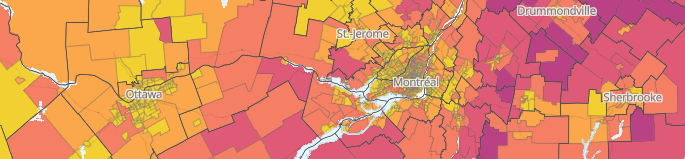
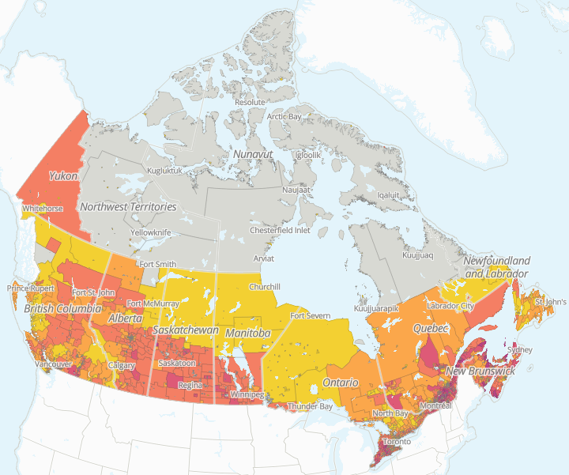
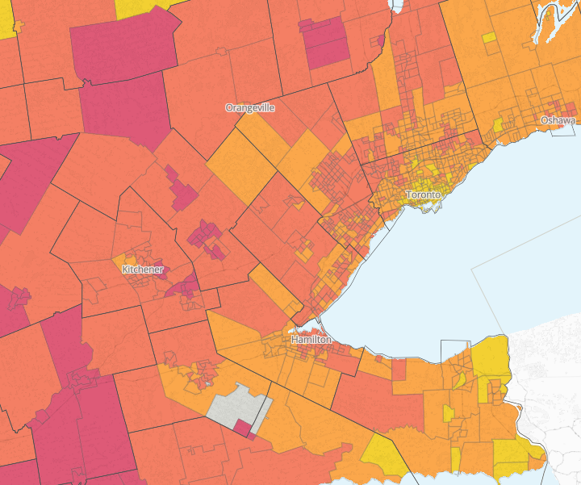
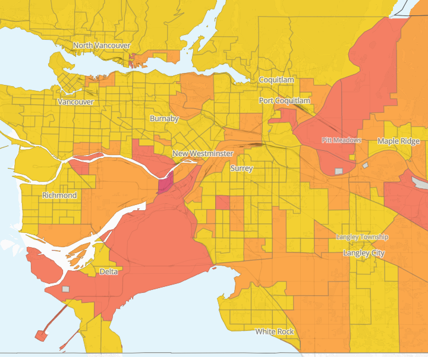
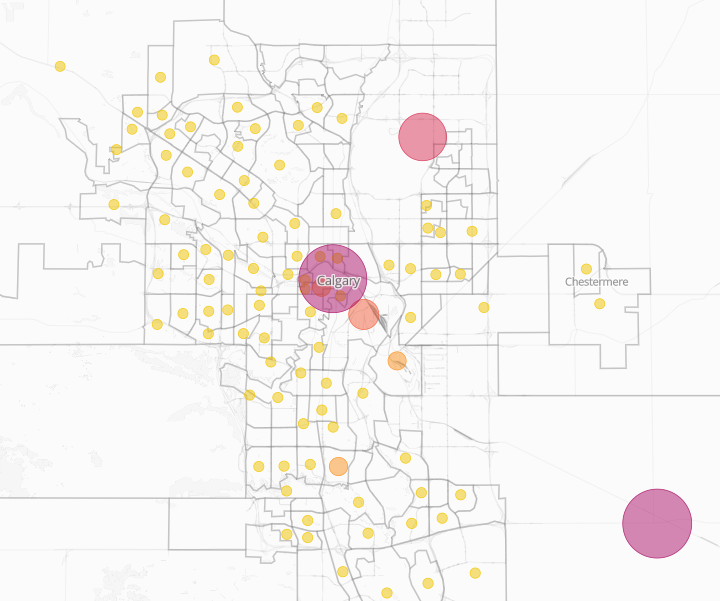

By Tara Vinodrai, Karen Chapple, Jeff Allen, Muhammad Khalis Bin Samion, Eli Easton, Rick DiFrancesco
~ October 2025

Mapping tariffs
Potential local impacts on jobs and businesses across Canada
Since Donald Trump was elected as the 47th President of the United States, tariffs and trade have become hot topics. The U.S. government has continued to announce tariffs on goods exported from Canada and other countries to the United States. For Canada, one of the largest trading partners with the U.S., the introduction of tariffs has led policymakers, politicians and the public to ask questions about where the impacts might be felt now and in the longer run. From resource-dependent communities to manufacturing hubs, local economies across Canada are tied to the U.S. and the global economy in complex ways. But, what places are most vulnerable to Trump’s tariffs? To answer this question, we created a mapping and visualization tool to trace out the tariff exposure of local economies across Canada’s vast geography. In doing so, our work offers a window into how jobs and businesses are influenced and how the fortunes of cities and regions across Canada may be altered.
Background: Canada-U.S. trade
The Canadian economy is deeply integrated with the U.S. economy. In 2023, Canada-US trade surpassed $1.3 trillion (CAD), with approximately $3.5 billion (CAD) worth of goods and services being exchanged daily. Indeed, the United States is Canada’s largest export destination, accounting for 76.4% of Canadian exports, with no other trading partner accounting for more than 4% of export trade. While Canada relies heavily on the U.S. market for sales, there is greater diversity in the source of imports to Canada. Still, almost half of Canada’s imports (49.2%) are from the United States.
This pattern holds true over time. The charts below show Canada’s exports to the U.S. and the rest of the world between 2005 and 2024. The proportion of Canada’s exports to the U.S. has decreased slowly over time, from 83.8% in 2005 to 76.4% in 2024. There was a slight decline in the proportion of Canada’s exports to the U.S. between 2018 and 2020, potentially due to the imposition of tariffs by the U.S. under the first Trump administration.
This longstanding trading relationship is codified into various trade agreements, beginning with the Canada-US Free Trade Agreement (1989) and the North American Free Trade Agreement (1994), which extended trade relations to include Mexico. In 2020, NAFTA was replaced by Canada-United States-Mexico Agreement (CUSMA), an updated trilateral agreement that provides preferential, duty-free treatment for goods that meet specific rules of origin.
Overall, due to the tight integration of supply chains, trade agreements, proximity, and longstanding business relationships, Canada’s trading activities remain tied to the U.S. economy. Given Canada’s dependence on the U.S. market, it is no surprise that the ongoing trade war and escalation of tariffs on various goods is cause for deep concern amongst Canadian politicians, policymakers and the public.
Current tariff landscape (as of September 2025)
Click here for the most up-to-date list.
Beginning in February 2025, the U.S. government has announced (as well as retracted and changed) an extensive suite of tariffs targeting Canada and other countries. The unpredictable shifts in tariff actions introduce challenges in keeping track and staying up to date. Several organizations maintain real-time information on tariff announcements affecting Canada and other trading nations (for example, here).
- Increased tariffs on non-CUSMA compliant Canadian goods to 35% from 25% announced in February 2025 (effective: August 1, 2025);
- A 40% tariff on Canadian exports that are transshipped to avoid the above-stated tariffs (effective: August 1, 2025);
- A 10% tariff on non-CUSMA compliant potash and energy (effective: August 1, 2025);
- An increase to a 50% tariff on all Canadian steel and aluminum imports to the U.S. from the 25% announced in February 2025 (effective: June 3, 2025);
- A 25% tariff on automobiles and light trucks imports; for Canada, this applies to the non-US content of vehicles imported under CUSMA (effective: April 3, 2025);
- A 25% tariff on non-CUSMA compliant auto parts (effective: May 3, 2025);
- A 50% tariff on copper (effective: August 1, 2025);
- Duties of approximately 45% on Canadian softwood lumber (10% new tariffs, 35% anti-dumping & countervailing) There was a 25% tariff on upholstered furniture, kitchen cabinets, and vanities looped under this section as well which was planned to be increased for January 1, 2026, but the increase has been delayed; and
- A 25% tariff on medium and heavy duty vehicles (trucks) (effective November 1, 2025);
Additionally, the U.S. government has eliminated de minimis treatment for low-value shipments (defined as those under $800 in value). In other words, shipments to the U.S. from Canada that are under $800 are now subject to tariffs.
In response, the Canadian government has announced retaliatory tariffs and other measures, although not all of these have been implemented. And, trade negotiations and discussions with the U.S. continue. As of September 1, 2025, the Canadian government lifted many of its counter-tariffs noting that many Canadian exporters (with the exceptions of those related to automotive, aluminum, and steel) are able to avoid tariffs through compliance with CUSMA. Canada’s Department of Finance maintains an up-to-date list of Canadian tariffs on U.S. exports.
Overall, the situation remains fluid and unpredictable, adding uncertainty to markets and confounding analysis.
Measuring the impact of U.S. tariffs on Canada
A recent report from the Royal Bank of Canada notes that estimating the impacts of tariffs on the Canadian economy is tricky business, especially due to uncertainty created by an ever-changing tariff landscape. Factors that influence these impacts include which goods are subject to tariffs and the magnitude of those tariffs. The responses of consumers, businesses, banks, and governments also play a role. These actions may include retaliatory measures, interest rate changes, and efforts to diversify markets and supply chains. Some consumers may choose to buy local or Canadian products or curb travel to the United States. In addition, spending and investment decisions, as well as programs designed to support businesses and industries at risk, can shape outcomes.
Economists and policymakers at banks, think tanks and other organizations have published extensively on the possible impacts on the Canadian economy. At the national level, the Bank of Canada has used models to demonstrate how U.S. tariffs may affect inflation and GDP growth.
Observers have also considered sub-national impacts. For example, the Business Data Lab at the Canadian Chamber of Commerce conducted an analysis to examine which Canadian cities might be most exposed to tariffs. Similarly, the Conference Board of Canada has estimated the impact of tariffs across Canada’s largest metropolitan regions.
Methods
In our initial work, we focus on identifying potential direct exposure to tariffs. In other words, we look at where the jobs and businesses are that make goods subject to U.S. tariffs and that are more likely to be exported to the U.S. market.
Estimating the potential exposure of jobs and business to U.S. tariffs at the local level is a complex task and proved to be a challenging undertaking, especially as the scope and magnitude of U.S.-imposed tariffs are constantly evolving and changing. Our analysis required accessing data, concordance tables, and information from several Canadian and U.S. government agencies, including Statistics Canada, U.S. Customs and Border Protection, the U.S. International Trade Commission, the U.S. Department of Commerce, and the U.S. Census Bureau, amongst others. We identified the specifics goods subject to tariffs, using the Harmonized Tariff Schedule for the United States and matched those goods (classified using HS codes) to specific industries (classified using the North American Industrial Classification System, NAICS). Using this information, we were able to map the location of jobs (based both on where people work and where people live) and businesses at the dissemination area level for all of Canada. To focus on how vulnerable these places were to US-related tariffs, we weight our estimates based on the extent to which the industries involved were oriented to the U.S. market measured by export intensity.
Uneven geographies of trade exposure
Using our mapping and visualization tool we can trace potential tariff vulnerabilities across Canada. Overall, our results show that tariffs impact Canadian cities and communities from coast to coast to coast.

Potential direct exposure to businesses related to all goods currently subject to tariffs (as of September 1, 2025)
Click here to view interactive map
However, our sector-specific results underscore underlying regional specialization patterns across Canada. For example, the following map shows that there are widespread vulnerabilities to workers (based on place of residence) due to U.S. automotive tariffs across the Greater Golden Horseshoe. This is not surprising given the historic presence of the automotive industry in southern Ontario.

Potential direct exposure of tariffs to employees in the automotive industry.
Click here to view interactive map
The next map shows the total proportion of employees by place of work estimated to be vulnerable to Trump’s tariffs in the Vancouver metropolitan region. The jobs and businesses most at risk are on the outer edges of the metropolitan region. This reflects the areas of Vancouver’s regional economy where there are designated employment lands, especially along the Fraser River where there is a concentration of industrial activity.

Proportion of employees by place of work estimated to be vulnerable to Trump’s tariffs in the Vancouver metropolitan region.
Click here to view interactive map
Lastly, this map shows the number of businesses that have the potential to be directly exposed to tariffs on energy and natural resources in Calgary. In this case, our map shows that it is the headquarters of companies located in Calgary’s downtown that are most likely to be affected.

Number of businesses that have the potential to be directly exposed to tariffs on energy and natural resources in Calgary.
Click here to view interactive map
While we have provided only a few examples of the highly uneven patterns of potential direct exposure across some of Canada’s largest cities, these patterns extend to other parts of Canada. For example, potential vulnerabilities to aluminum and steel tariffs can be seen across Canada, but are more acute across southwestern Ontario and parts of Quebec. And, we can identify vulnerabilities related to lumber tariffs, which are set to increase to 45% on October 14, 2025, and widen in their scope to include more goods. Our maps show that the immediate impacts will more likely to be found in more resource-dependent cities like Kelowna, Kamloops and Nanaimo in British Columbia, as well as across cities in Quebec and Atlantic Canada.
Overall, our mapping and visualization tools provide a window into the highly localized and uneven impact of U.S. tariffs across Canada’s cities and regions. We invite you to explore our online mapping and visualization tool, and you can also investigate our city ranking tool. Over the next few months, stay tuned for additional analysis focused on different goods and industry sectors. We will also explore scenarios that visualize the possible long-run impacts of U.S. tariffs on cities and neighbourhoods across Canada.